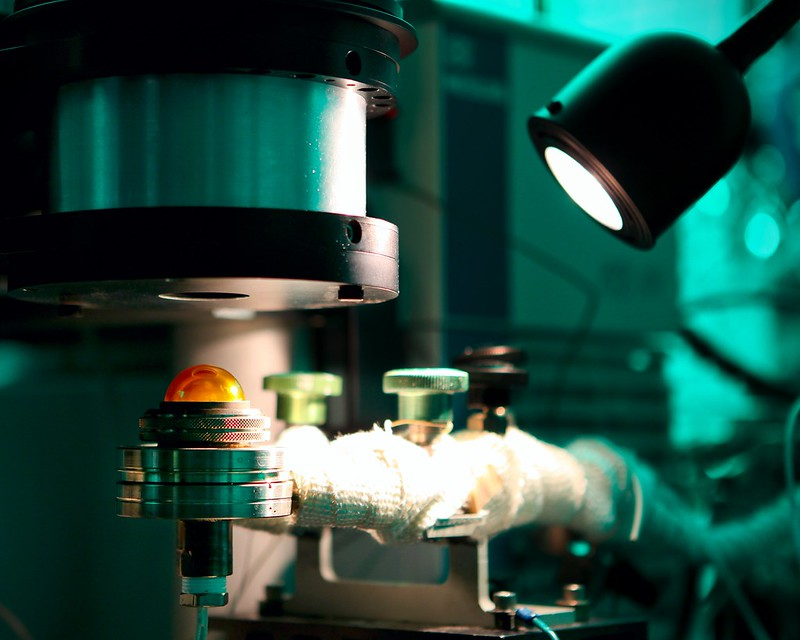
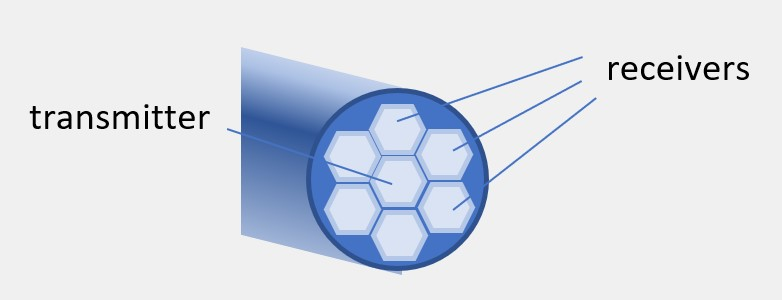

Fruit picking is a largely manual task. Ripe fruits can be easily bruised or damaged if handled roughly, so robots have a hard time safely retrieving them. Georgia Tech’s Research Institute developed a fruit picking robot capable of identifying the ripeness of a fruit and gently picking it. I was tasked with creating a system capable of accurately identifying if blueberries were ripe, and integrate it with a soft robotics claw that would retrieve the berry.
From literature review, I found that the concentrations of glycose in the fruit are the main indicator of ripeness, and those can be measured with near infrared spectroscopy. The challenge here was to create a compact NIRS system that could be attached to a robotic arm and claw.
Spectroscopy works by shining a light into a material and capturing and interpreting the percentage of light reflected by it. There are tree wavelengths that are reflected by glycose, so the percentage of reflection of those three values could indicate how much sugar is in the berry. Two challenges became apparent: how to channel the light to the berry and how to avoid ambient light to get to the receiver.
I decided to use optical fiber to transfer the light to and from the berry, so that I could have all the light and processing fixtures in the robot, and not in the claw. I experimented with several different fiber diameters and configurations, finally settling on a hexagonal layout of 3mm fibers, which transmitted the highest light intensity. When trying to reduce ambient light contamination, I tried to create a dark chamber by creating an enclosure the berry could be surrounded by. However, while effective, this method couldn’t de easily used in an automated setting, since it would require precise positioning and another degree of motion to be able to encase the fruit. The final prototype involved a rubberized endpoint that sealed the fiber optics ends to the berry, and a correction algorithm was implemented, taking readings without shining a light to calibrate the data.
Using a SVM to classify the data into ripe and unripe berries resulted in 90% accuracy in ripeness classification, when attached to the designed claw and exposed to intense ambient light.